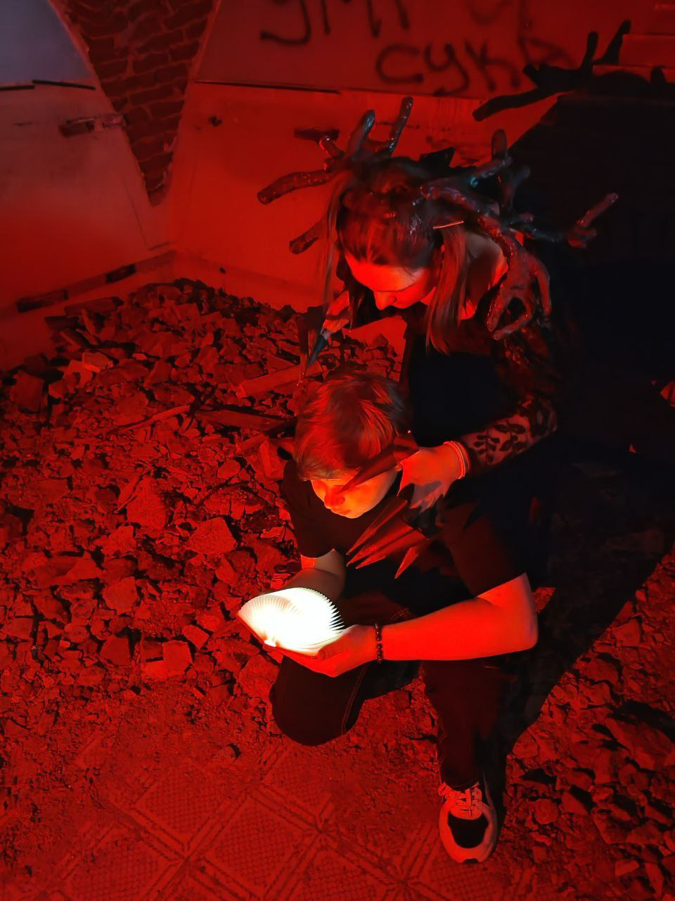

Вас ждёт увлекательное приключение в старинном замке, полном загадок и тайн. Команда игроков должна разгадать головоломки, найти ключи и выбраться до того, как часы пробьют полночь...
Квест расчитан на 85 минут, но вы можете пройти его быстрее, все зависит от вашей скорости.
Да, только об этом надо сообщить администратору не позднее, чем за 2 дня до проведения квеста.
От 2 до 6 игроков.
Нажмите кнопку «Забронировать» выше и вы перейдёте в Telegram‑бота. Далее следуйте инструкции в боте.
Да, минимальный возраст участников — 14 лет.